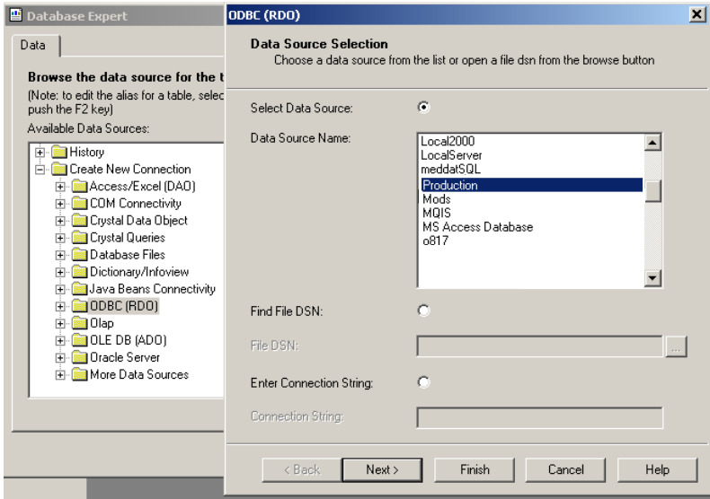
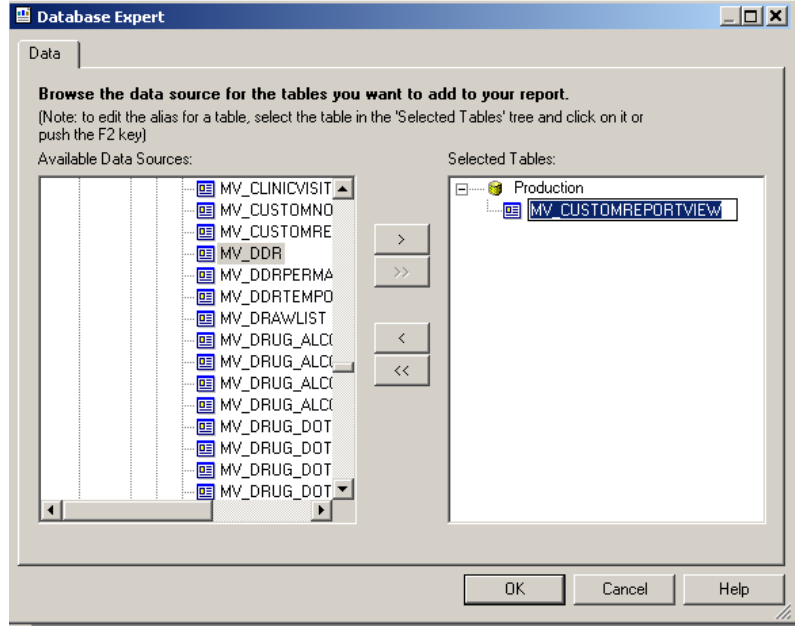
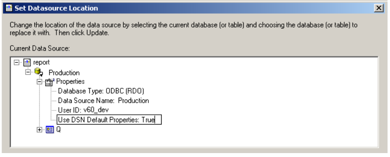

In Cority, you can create custom reports and add them directly to the Cority Reports list. You fill in selection criteria (the same way you do with the built-in reports), and that criteria (such as date range, department, division, etc.) is then used by the custom report.
The report should be based on a single custom view, named using the convention Name_Of_View.
To create a custom report:
Create a custom view (for example, MV_CUSTOMREPORT) that links all of the tables required for the report.
In Crystal Reports, select Database Expert, Create New Connection, ODBC, and then select the data source name you created in Install and Configure the ODBC Driver.

Select the new MV_CUSTOMREPORT view and add it to the right panel. Then, in the right panel, click the view name and press the F2 key to change the name to Q. Custom reports must use the alias name Q for the view.

In Crystal Reports, select Set Datasource Location and expand the Properties option. Click Use DSN Default Properties, and then press the F2 key to change False to True.

Save the report in \<your application web folder>\Reports\CustomReports folder.